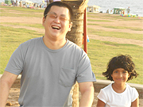

「スリランカの家庭に触れたり、ボランティアができ、料金がリーズナブルだったので参加しました。
英語の先生は、とても優しくとってもわかりやすかったです。
しかしストイックでした。
スリランカでのホームステイは、一生の宝となりました。
ホストファミリーは、とても親切で、とっても楽しく最高の生活を送ることができました。
低開発村視察は、とてもカルチャーショックを受けました。
テレビで見る現実とまったく違いました。
そして僕にはとてもいい意味で新鮮でしたし家族の方がとっても親切でした。
孤児院でのボランティア経験は、最高の一言です。
施設の子供の顔を思い出すだけで身体からパワーがみなぎってきます。
スリランカに行く前は、豆のカレーの国のイメージでしたが、 今では、スリランカは僕の第二の母国となりました。
もちろん、またスリランカへ行きたいと思ってます。
次はシンハラ語の勉強で、このプログラムを利用したいと思います。
初めての海外経験でこんなに貴重な体験ができてとっても良かったですし、ただの観光旅行で行くだけではなくて良かったです。
時々日本食が恋しくなったので、インスタント味噌汁を持ってけばと良かったと思いました(笑)
ありがとうこざいました。
ボホマストゥティ！」